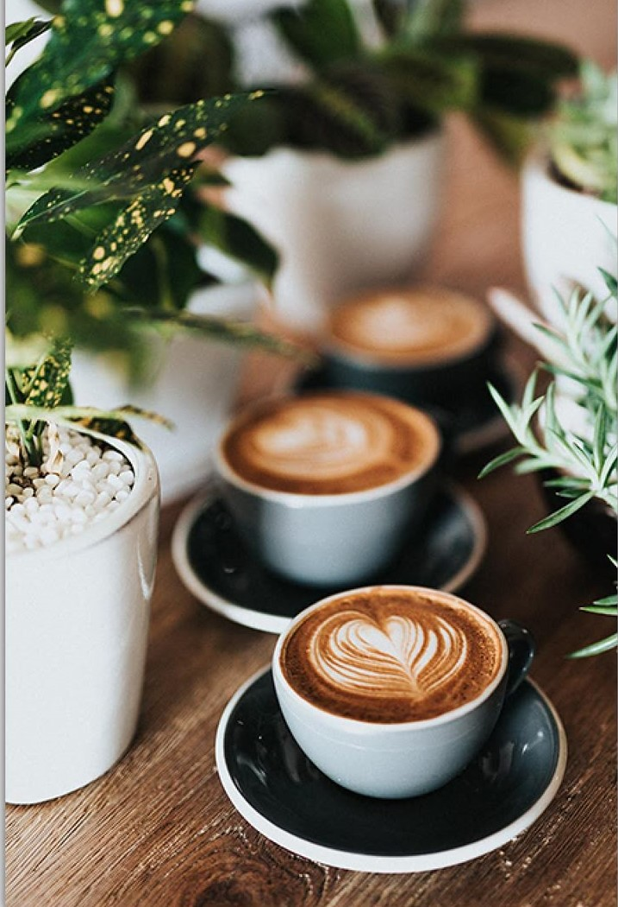
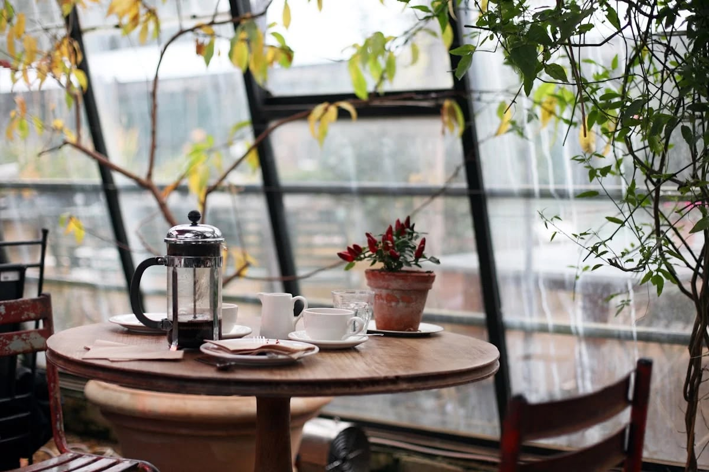
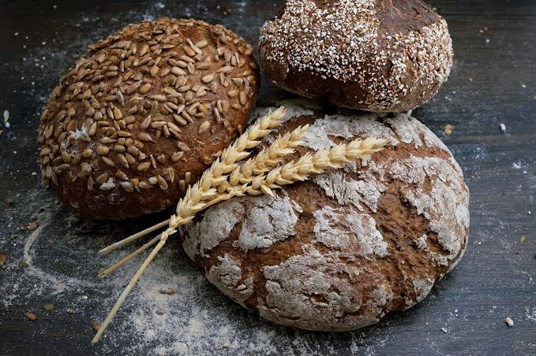
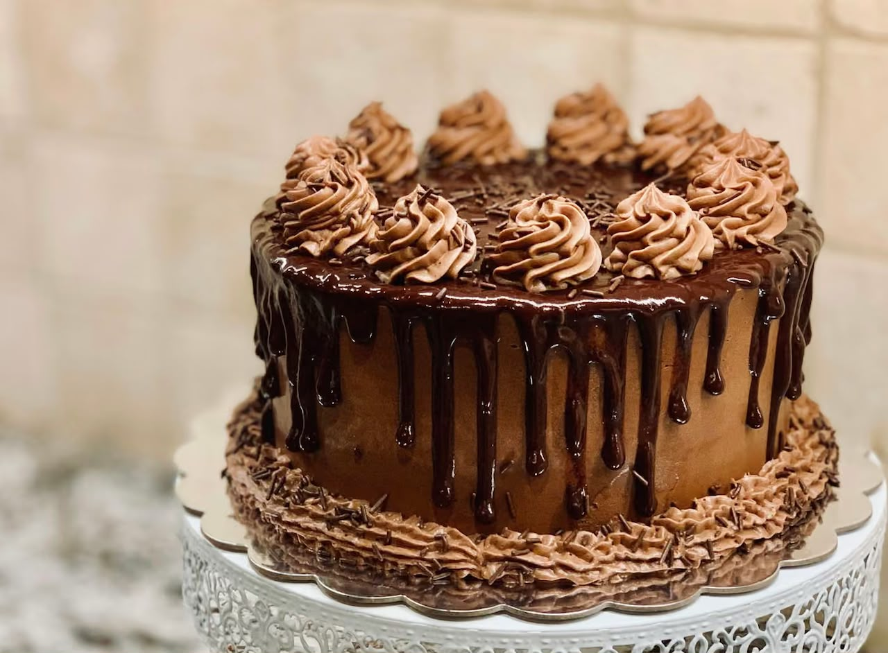

Café signature
Un café riche en arômes.
CAFÉ • PÂTISSERIE • DAKAR
Découvrez un café chaleureux, des boissons délicieuses et des pâtisseries préparées avec soin.
Découvrir notre menu

Un café riche en arômes.

Des gourmandises dorées et croustillantes.

Des desserts pour tous les goûts.